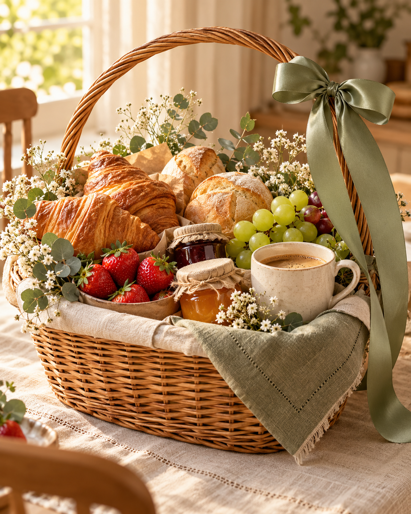
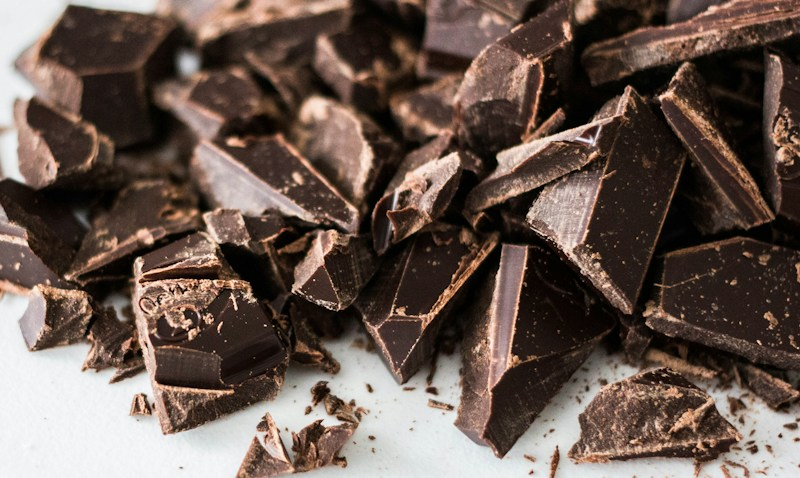
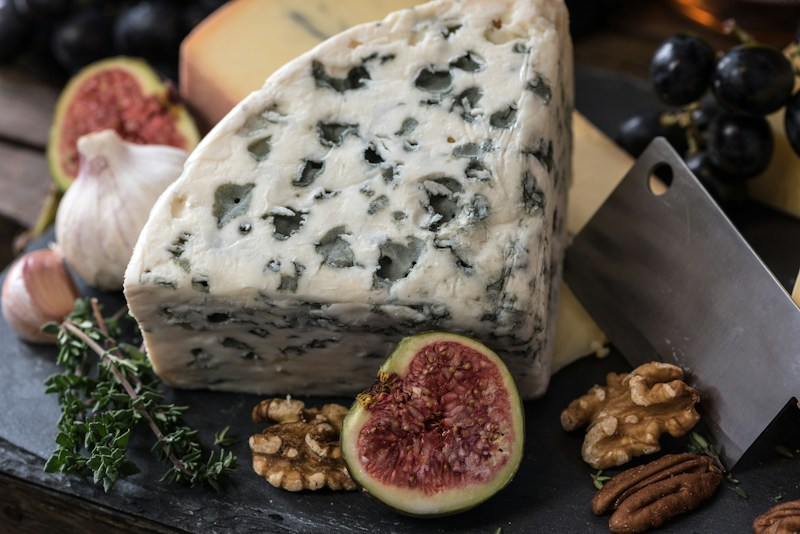

Café da manhã
01Para começar o dia com uma surpresa cheia de afeto.
Consultar opções →PARA QUEM MERECE UM CARINHO
Um bom dia mais gostoso. Um brinde especial.
Uma surpresa que diz: “lembrei de você”.
Café da manhã, chocolates, queijos, vinhos e muitos outros jeitos de transformar carinho em presente.

ESCOLHA O SEU JEITO DE SURPREENDER
Qual é o sabor desse carinho?
Explore as opções e consulte as
combinações disponíveis pelo WhatsApp.
Para começar o dia com uma surpresa cheia de afeto.
Consultar opções →
DOÇURA QUE ENCANTA↗Um jeito delicioso de adoçar os melhores momentos.
Consultar opções →Para brindar as pessoas e as histórias que merecem.
Consultar opções →
GOSTOSO É COMPARTILHAR↗Sabores para acompanhar uma boa conversa.
Consultar opções →Imagens ilustrativas de inspiração. Consulte composição, valores e disponibilidade no atendimento.
MUITO ALÉM DE UM PRESENTE
Um aniversário, uma conquista, um agradecimento ou só aquela vontade de alegrar o dia de alguém. Sempre existe um bom motivo para espalhar carinho.
DO SEU CARINHO AO PRESENTE
Fale com a gente pelo WhatsApp e conte para quem é o presente e qual é a ocasião.
Consulte as opções, a composição e os valores para encontrar o presente ideal.
Confirme a data, a disponibilidade e as condições de entrega antes de finalizar.
TEM ALGUÉM ESPECIAL EM MENTE?
A gente te ajuda a escolher uma surpresa especial.
Encomendar pelo WhatsApp ↗+55 11 98583-9338